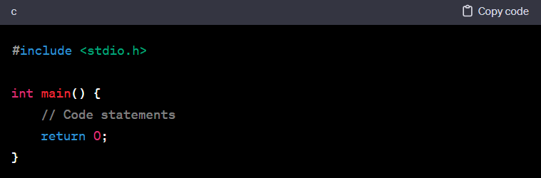

Introduction to C:
Developed by Dennis Ritchie at Bell Labs in the early 1970s.
Widely used for system software, embedded systems, and application development.
Known for its efficiency, speed, and portability.
Basic Structure of a C Program:

#include : Includes the standard input/output library.
int main() { }: The main function where program execution begins.
return 0;: Indicates successful termination of the program.
- Data Types:
- Primitive Types:
char: Character data type.
float: Floating-point data type.
double: Double-precision floating-point data type.
void: Represents absence of type.
- Derived Types:
Arrays: Contiguous memory locations to store multiple values of the same type.
Pointers: Variables that hold memory addresses.
Structures: Allows grouping variables of different data types.
Unions: Similar to structures but share the same memory space for different variables.
- Variables and Constants:
Variables: Hold data that can be changed during program execution.
Constants: Hold values that remain unchanged.
- Operators:
- Arithmetic Operators:
- Relational Operators:
- Logical Operators:
- Control Statements:
- Conditional Statements:
- loops
- Switch Case:
Used to select among multiple alternatives based on the value of an expression.
- Functions:
Allow modularizing code for better readability and reusability.
Have a return type, name, parameters, and a body.
Can be declared before they are defined.
- Arrays and Pointers:
- Arrays:
Contiguous memory locations to store multiple values of the same type.
Elements accessed using indices.
- Pointers:
Variables that store memory addresses.
Used for dynamic memory allocation, arrays, and more.
- Strings:
In C, strings are arrays of characters terminated by a null character \0.
Manipulated using functions available in the string.h library.
- File Handling:
C supports file handling operations using file pointers and functions like fopen, fclose, fread, fwrite, etc.
- Memory Management:
Dynamic memory allocation and deallocation using functions like malloc, calloc, realloc, and free.
- Preprocessor Directives:
#define, #include, #ifdef, #ifndef, etc. for conditional compilation and macro definition.
- Good Practices:
Use meaningful variable and function names.
Comment your code for better understanding.
Always initialize variables before using them.
- Sample C Program:

This program adds two numbers (num1 and num2) and displays the result using printf.
Understanding these fundamental concepts in C will provide a strong foundation for further exploration and learning within the language!
gohome